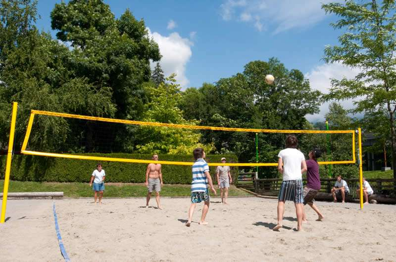
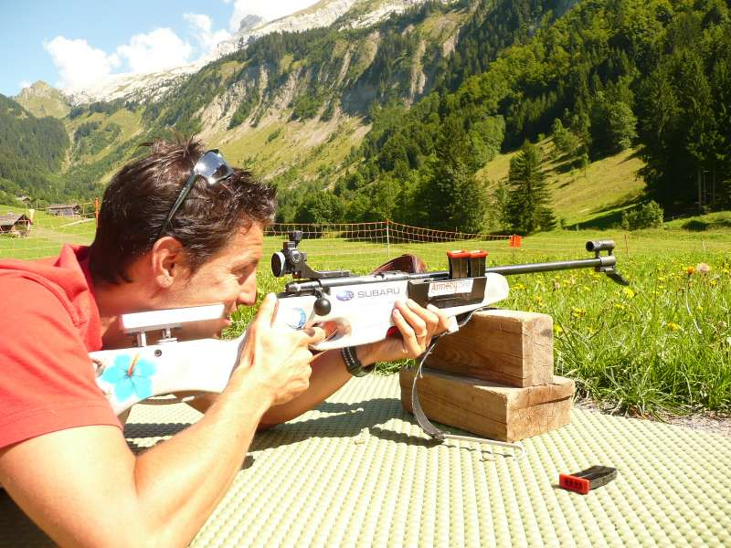
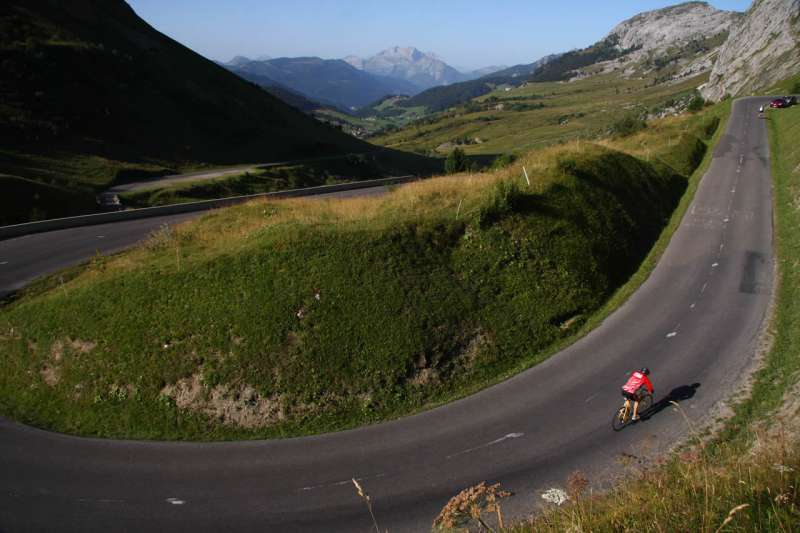
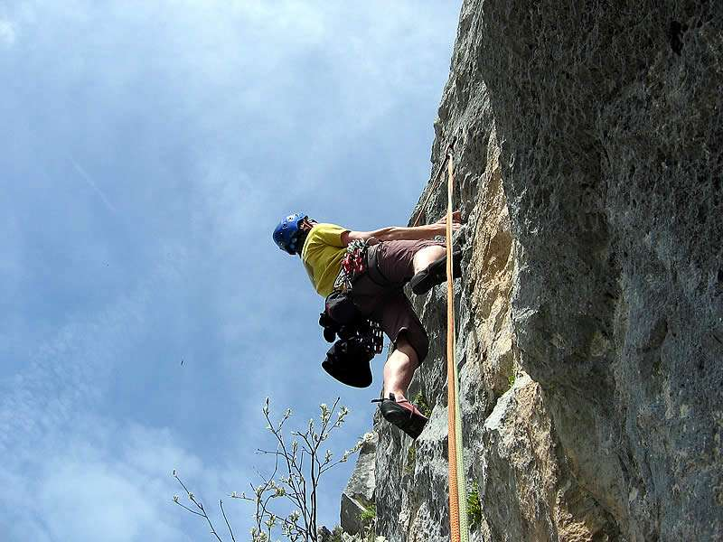
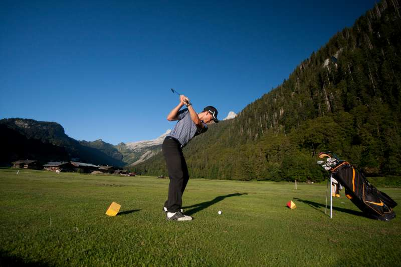
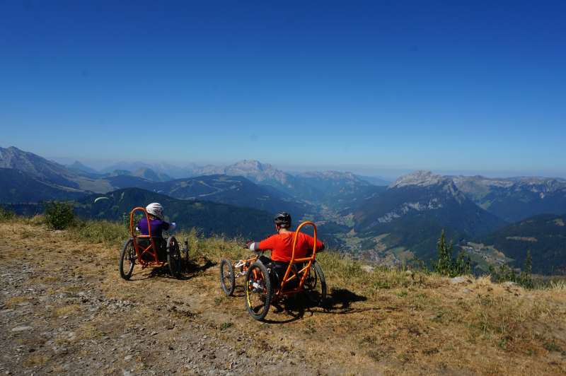
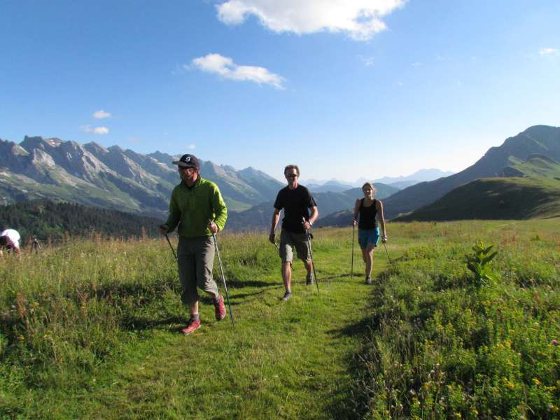

La montagne c'est le ski, oui mais il existe plusieurs autres activités que je vous propose de découvrir ci-dessous.
Cliquez sur une image pour ouvrir la réservation correspondante sur le site du Grand Bornand.
Je vous propose de retrouver en bas de pages les evènements ansi que les commodités existantes au Grand Bornand
Activités en été







Evènements:
Festival international de spectacle jeune public «Au bonheur des mômes » (en août).
Glisse en Cœur (en mars) : 24h de ski et de concerts, évènement caritatif. Christophe maé, Tal, Jennifer,... sont déjà passé par les pistes du chinaillon.
Fête de l'Alpage (début août), au Chinaillon depuis 1966, transhumance des moutons, fête des vaches laitières pour la production des reblochons des Aravis, défiler de char sur différents thèmes locaux (ex: la vache,les transports à travers les âges,...) et tiercé de ski sur herbe (excellent spectacle, les skieurs sont déguisés en rapport avec le thème des chars.
Bal des conscrits, organisé en mai, chaque année.
Semaine de la montagne, qui permet de faire découvrir la faune et la flore locale ainsi que les différentes manières de pratiquer la montagne. Une soirée est organisée durant celle-ci par le secours en montagne et le Bureau des Guides et des accompagnateurs.
Gamineries des Aravis, compétitions inter'patelins, organisé par le KGB (Krew Grand-Bornand) et l'Office du Tourisme.
Fête de Lormay (fin juillet) au fin fond de la vallée du bouchet.
Commodités
Salle des fêtes, congrès : « L'Espace Grand-Bo »
Piscine
Mini golf
La Forêt des Dodes, parcours accrobranche voisin à la patinoire du village
Golf du Rocher Blanc
Stade de Biathlon "Sylvie BECAERT" homologué par le comité international IBU en 2013
Une grenette (place couverte du marché anciennement)